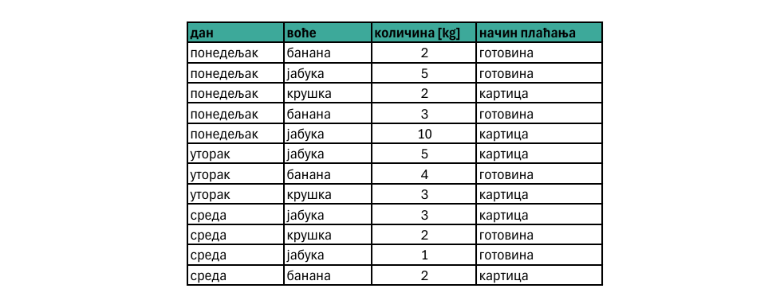
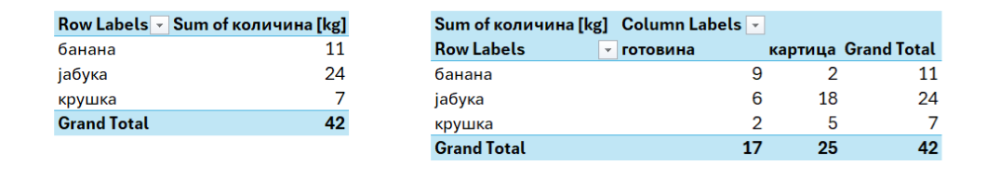

Пивот табеле¶
Пивот табела је један од најважнијих алата за анализу података у програмима као што су Microsoft Excel и Google Sheets. Она омогућава да исте податке „окренемо“ (pivot = окренути) и прикажемо их на нов начин - да их групишемо, пребројимо, израчунамо просеке или упоредимо категорије, без мењања оригиналне табеле. Уместо ручног пребројавања и прављења више помоћних табела, пивот табела омогућава да се одговори добију брзо, прецизно и прегледно.

У кошарци, пивот је играч који једном ногом остаје на месту, а окретањем тела може да дода лопту у различитим правцима. Слично томе, пивот табела користи исте податке, али их „окреће“ и реорганизује тако да их можемо посматрати из различитих углова, у зависности од тога шта желимо да сазнамо.
Радница у продавници воћа сваког дана бележи сваку продају у табели. За сваку куповину записала је следеће податке:

Ово су сирови подаци. Из њих не можемо одмах да добијемо одговор на питање, на пример, Које воће се највише продаје? или Да ли купци чешће плаћају готовином или картицом?
Разлика између обичне и пивот табеле¶
У обичној табели можемо да видимо сваку појединачну продају, али ако желимо да сазнамо, на пример, укупну количину продатог воћа сваке врсте, морали бисмо ручно да пронађемо све редове са јабукама и саберемо количине, затим банане, па поморанџе… Код већег броја редова то одузима време и лако долази до грешке.
Пивот табела аутоматски организује и сабира податке. На пример:

Овакав приказ омогућава да одмах видимо резултате, без ручног сабирања и без формула.
Обична табела приказује појединачне податке. Пивот табела приказује њихов преглед и омогућава анализу.